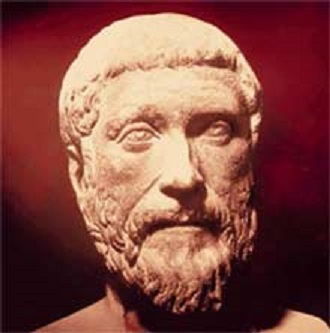

Welcome to the Mathematical World!
Meton of Athens
The Father of the Metonic Cycle
Meton of Athens (fl. 5th century BCE, around 432 BCE) was a Greek astronomer, mathematician, engineer, and surveyor. He is best remembered for introducing the Metonic cycle, a 19-year period that reconciles the solar year with the lunar month. This discovery became a cornerstone of ancient calendars and is still relevant in modern timekeeping.
Background
Meton lived in Athens during the classical period and worked alongside his colleague Euctemon. He observed the heavens from the Pnyx Hill in Athens, where a solar observatory (Heliopolis) was established to make precise astronomical measurements.
His work focused on understanding the relationship between the solar year \((365.24\ \text{days})\) and the lunar month \((29.53\ \text{days})\), which was essential for building accurate calendars used in festivals, agriculture, and religious life.
Key Contributions
-
(a) The Metonic Cycle
Meton discovered that:
\[ 19\ \text{solar years} \approx 235\ \text{lunar months} \]Mathematically:
\[ 19 \times 365.24 \approx 6939.6\ \text{days} \] \[ 235 \times 29.53 \approx 6939.7\ \text{days} \]The two values are almost equal, differing by only a few hours. This allowed him to align lunar and solar calendars, making it possible to predict eclipses and set consistent dates for festivals.
-
(b) The Callippic Cycle
Later, his cycle was refined by Callippus, who combined four Metonic cycles (76 years) and corrected the small discrepancy. This refinement highlighted how influential Meton’s work was in shaping future Greek astronomy. -
(c) Calendar Reform
Meton proposed reforms to the Attic calendar of Athens, inserting “intercalary months” based on his cycle to keep lunar months in sync with the solar year. His reforms influenced not only Greek but also Jewish and Babylonian calendars.
Influence and Legacy
- In Antiquity: The Metonic cycle was inscribed on the Antikythera Mechanism, the ancient Greek “astronomical computer.”
- In the Jewish Calendar: The Hebrew calendar still uses the Metonic cycle to fix the dates of Passover and other festivals.
- In Christianity: The cycle plays a key role in determining the date of Easter.
- In Astronomy: His work demonstrated the power of mathematical cycles to track celestial phenomena long before modern astronomy.
Legacy
Meton of Athens is remembered as the master calendar-maker of antiquity. His 19-year cycle provided a practical solution to harmonizing the Sun, Moon, and Earth’s rhythms, ensuring that human rituals and agriculture stayed in step with the heavens.